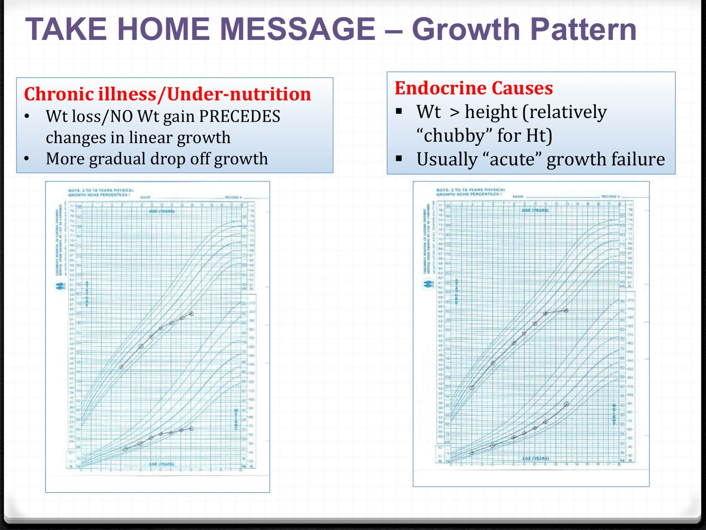
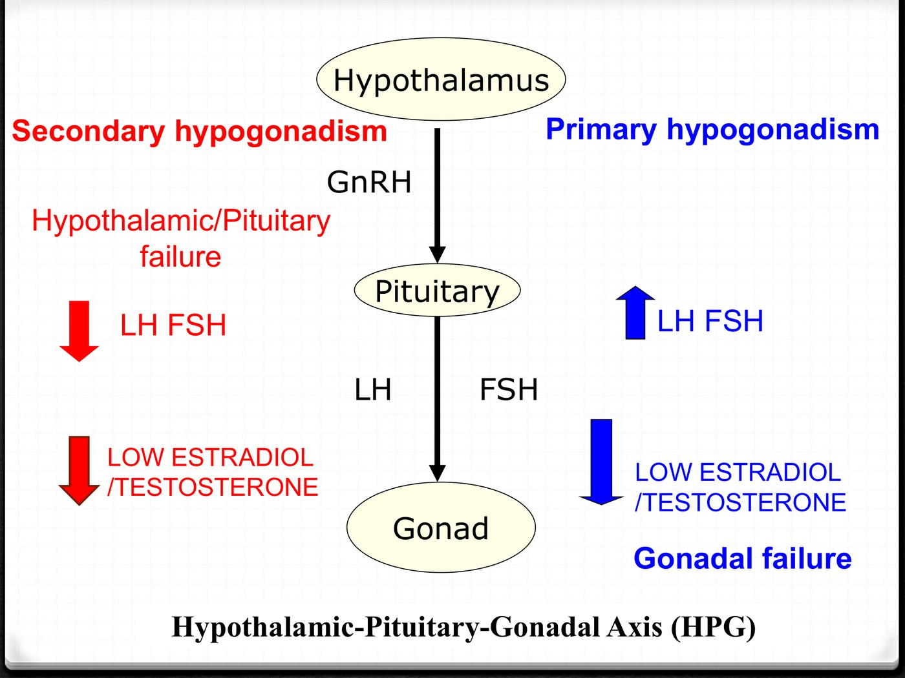

Pituitary, Adrenal & Growth
The pituitary and its axes, the adrenal from crisis to Cushing's, and the child who is too short, too late or too early. Warm up with 11 questions to find your weak spots, work through the three topics (the step bar marks the ones you missed), then finish with a 22-question final. Every answer links back to the lecture it came from.
Warm-up quiz
Cold, no notes. It's a diagnostic, not a grade: your score per topic lands on the step bar and tells you where to spend the day.
Pituitary
Mass effect, working through each axis, the "inappropriately normal" trap, and the three secreting tumours: ACTH, prolactin and GH.
- Two sets of questions for every pituitary patient: mass effect (fields, diplopia, headache, apoplexy) and each hormone axis, one at a time. Deficiency can be partial.
- A "normal" TSH means nothing in pituitary disease. Free T4 5 with TSH 4.11 = central hypothyroidism. For deficiency, measure the target hormone.
- Steroid before thyroxine, or you can precipitate an adrenal crisis.
- Prolactinoma: dopamine agonist first (cabergoline), even for macroadenomas. Check pregnancy, TSH and drugs first.
- Acromegaly: IGF-1 → OGTT (GH should fall < 1) → MRI. 12-year delay. Surgery is primary.
The axes, and the mass


The chiasm's crossing fibres are the nasal retinal fibres, which see the temporal fields. Press from below and both temporal fields go. Lateral spread into the cavernous sinus gives diplopia (CN III, IV, VI). Apoplexy (bleeding into the gland) is an emergency. MRI beats CT.
Deficiency: one axis at a time
| Axis | Looks like | Measure | Replace |
|---|---|---|---|
| Adrenal | Fatigue, weight loss, hypotension, hypoglycemia; no pigment, no high K | 8–9 AM cortisol: < 100 confirms, > 450 excludes, else stimulation test | Hydrocortisone + stress-dose teaching, first |
| Thyroid | Cold intolerance, dry skin, bradycardia, constipation | Free T4 (TSH low, normal or mildly up) | Levothyroxine, dosed on free T4 |
| Gonadal | Low libido, less shaving, amenorrhea, hot flashes | LH, FSH with the sex steroid | Testosterone (doesn't restore fertility) |
| GH (adult) | More fat, less lean mass, poor exercise capacity | IGF-1; ITT or glucagon stimulation | A delayed decision |
| Posterior (AVP) | Diabetes insipidus | Separately | — |

Prolactin
| Prolactin (µg/L) | Effect |
|---|---|
| < 20 | Normal |
| 20–50 | Low progesterone, short luteal phase (trouble conceiving) |
| 50–100 | Oligo- or amenorrhea |
| > 100 | Overt hypogonadism, low estradiol |
Causes: prolactinoma, pregnancy, primary hypothyroidism (TRH drives lactotrophs), drugs (metoclopramide, haloperidol, domperidone, chlorpromazine; also verapamil, methyldopa, estrogen), stalk compression, renal failure, stress, macroprolactin. Work-up: prolactin, LH/FSH, sex steroid, TSH and a pregnancy test.
Treat with a dopamine agonist (cabergoline > bromocriptine), even macroadenomas: it shrinks the tumour. Surgery only if it fails. Women: 95% microadenomas. Men: later, bigger tumours.

Growth hormone and ACTH excess
| Acromegaly (GH) | Cushing disease (ACTH) | |
|---|---|---|
| Clues | Ring, glove and shoe size up, frontal bossing, gaps between teeth, carpal tunnel, sweaty oily skin, new DM and HTN | Bruising, proximal weakness (failed squat), osteopenia, striae |
| Screen | IGF-1 (GH is pulsatile) | 2 of: 24 h UFC, late-night salivary, 1 mg DST |
| Confirm / locate | OGTT: GH fails to fall < 1 µg/L → MRI | ACTH normal/high → MRI (80–90% micro; 40% invisible) |
| Treat | Transsphenoidal surgery; somatostatin analogues, pegvisomant, radiotherapy | Surgery (ketoconazole meanwhile); steroids after; 20% recur |
Adrenal
Too little (primary vs secondary, the crisis, stress dosing), then too much: aldosterone, catecholamines and cortisol, plus the incidentaloma.
- The zone tells you the disease. Glomerulosa → aldosterone → Conn. Fasciculata → cortisol → Cushing. Medulla → catecholamines → pheo. Only the glomerulosa is off the ACTH circuit.
- Primary = gland failed: cortisol and aldosterone go, ACTH climbs → pigment, hyperkalemia. Secondary = signal failed (usually steroids): aldosterone kept, no pigment, no high K.
- Crisis: fluids + hydrocortisone 100 mg IV on suspicion, before any result. Stress dosing: rule of 3s; injection if vomiting.
- Aldosterone excess: resistant HTN + low K, no edema → aldosterone : renin ratio, confirm, then CT + adrenal vein sampling.
- Pheo: plasma free metanephrines; alpha before beta; never biopsy. Cushing: two positive screens, then ACTH. Commonest cause overall: exogenous steroid.
One gland, four products
| Layer (outside → in) | Makes | Controlled by | Too much |
|---|---|---|---|
| Zona glomerulosa | Aldosterone (salt) | Renin–angiotensin II and K⁺, not ACTH | Conn (primary hyperaldosteronism) |
| Zona fasciculata | Cortisol (sugar) | ACTH | Cushing |
| Zona reticularis | Androgens (sex) | ACTH | Virilization |
| Medulla | Catecholamines | Sympathetic fibres | Pheochromocytoma |
Adrenal insufficiency: primary vs secondary
| Primary (Addison's) | Secondary (central) | |
|---|---|---|
| Cortisol | ↓ | ↓ |
| ACTH | ↑↑ | ↓ / "normal" |
| Aldosterone | ↓ (renin ↑) | Preserved |
| Na | ↓ salt wasting + ADH | N or ↓ (dilutional) |
| K | ↑ | Normal |
| Pigment, salt craving | Yes | No |
| Main cause | Autoimmune (80–90%); also TB, mets, hemorrhage, CAH | Exogenous steroids |

Other clues: hypoglycemia, high calcium, pre-renal creatinine rise, eosinophilia and lymphocytosis. About 40% of Addison's comes with a polyglandular autoimmune syndrome, so check a TSH.
Diagnosis: cortisol first, ACTH second
| 6–9 AM serum cortisol | Means |
|---|---|
| > 450 nmol/L | Ruled out |
| 80–450 | Indeterminate → 250 µg cosyntropin test (normal: rise > 450) |
| < 80 | Diagnostic |
| Then ACTH: high = primary, low or inappropriately normal = secondary. Stop estrogen 6 weeks before (it raises CBG). | |

The crisis, stress dosing and replacement
- ABCs: it's shock first.
- Send lytes and glucose (cortisol and ACTH only if it costs no time).
- 2–3 L NS with dextrose, two large-bore IVs.
- Hydrocortisone 100 mg IV, then 50–100 mg q6–8h (covers the mineralocorticoid side too).
- Find the precipitant; add fludrocortisone once the dose comes down.
| Situation | Do |
|---|---|
| Flu, fever | Rule of 3s: triple the dose for 3 days |
| Vomiting, severe diarrhea | Injection, not tablets |
| Surgery | Hydrocortisone 50–100 mg 1 h before, then q6–8h |
| Chronic | Hydrocortisone 10–20 mg AM + 5–10 mg PM; fludrocortisone 0.05–0.1 mg (often not needed in secondary) |
Too much aldosterone
| Pattern | Aldo | Renin | Ratio |
|---|---|---|---|
| Primary | ↑ | ↓ | ↑ |
| Secondary (RAS, diuretics, HF) | ↑ | ↑ | Normal |
| Essential HTN | N | N | N |

Who to test: HTN on > 3 drugs, low K (spontaneous or thiazide-induced), HTN with an incidentaloma. It's 5–10% of all hypertension. Order: ratio → confirm non-suppression (2 L saline, fludrocortisone or salt load) → adrenal CT → adrenal vein sampling decides the side. Unilateral → adrenalectomy; bilateral → MRA.
Pheochromocytoma and the incidentaloma
Triad: headache, palpitations, sweating (with pallor), in spells; or sustained HTN with orthostatic hypotension (contracted volume). Also test: a paradoxical BP response to anaesthesia, and new diabetes in a young, lean, hypertensive patient.
- Test: fractionated plasma free metanephrines (99% sensitive). Metanephrines leak out continuously; catecholamines come in bursts.
- Alpha first (phenoxybenzamine, doxazosin), then beta. Beta first leaves alpha unopposed: hypertensive crisis. Labetalol acts mostly as a beta-blocker.
- Never biopsy an adrenal mass until pheo is excluded (70% complications).
- 30–40% are familial (MEN2, VHL, NF1, SDH): offer genetic testing to everyone.

| Incidentaloma: two questions | How |
|---|---|
| Is it functioning? | Cortisol: 1 mg overnight DST · aldosterone: BP, K, then ratio · catecholamines: metanephrines |
| Is it malignant? | Unenhanced CT: ≤ 10 HU and homogeneous = benign adenoma · 11–20 HU and < 4 cm = indeterminate · ≥ 4 cm, heterogeneous or > 20 HU = malignancy risk. With known cancer, 75% are mets. |
Cushing syndrome
| What's wrong | Screening test | Suggests Cushing |
|---|---|---|
| Too much cortisol | 24 h urine cortisol | > ULN (> 4× = Cushing) |
| Lost rhythm | Late-night salivary cortisol | > 4 nmol/L |
| Lost suppression | 1 mg overnight DST | 8 AM cortisol > 50 nmol/L |
Two positive screens make the diagnosis. Then ACTH: suppressed = adrenal; normal or high = pituitary (Cushing disease, 60–80% of endogenous) or ectopic. Always ask about steroids first, including inhaled, topical and injected.
| Best signs | LR+ |
|---|---|
| Ecchymoses | 10–11.3 |
| Osteopenia / fracture | 8–13.8 |
| Proximal weakness (failed squat) | 8–12.6 |
| Purple striae > 1 cm | 2.7–2.9 |
| Obesity | 1.75–3.1 (near the bottom) |

Growth & Puberty
The short child, the late bloomer and the early one. Each comes down to one or two measurements: growth velocity, bone age, the weight line and LH.
- Plot it and calculate the mid-parental height first: (mother + father ± 13 cm) ÷ 2, add for boys, subtract for girls. Many "short" kids are on their parents' line.
- Growth velocity is the worry number: < 4.5 cm/yr from age 4 to puberty, or crossing percentiles. Normal velocity = a normal variant: familial (bone age = real age) or constitutional delay (bone age delayed, late-blooming parent).
- Weight fell first → nutrition or chronic illness (celiac, Crohn's, CKD). Short and chubby → endocrine (hypothyroid, GH deficiency, steroids). Karyotype every short girl (Turner).
- Puberty starts with thelarche in girls (8–13) and testes > 3 mL in boys (9–14). Pubic hair is adrenal, so it can't date puberty. Delayed: no signs by 13/14; high LH/FSH = gonad failed (Turner, Klinefelter), low = brain (Kallmann, CNS, functional).
- Precocious: < 8 girls, < 9 boys. LH high = central (girls mostly idiopathic, boys need an MRI); LH low with high sex steroids = peripheral (CAH, McCune–Albright, tumour, exogenous). Central is treated with a continuous GnRH agonist.
The short child

| Bone age | Think of |
|---|---|
| Delayed | Constitutional delay, poor nutrition, chronic disease, GH deficiency, hypothyroidism |
| Normal | Familial short stature, Turner syndrome |
| Advanced | Precocious puberty, hyperthyroidism |
GH deficiency: the commonest endocrine cause. Normal size at birth (fetal growth doesn't need GH); neonatal hypoglycemia, prolonged jaundice, micropenis; midline defects. Acquired: craniopharyngioma, cranial radiation, head injury.
Testing: a random GH is useless (pulses). Screen with IGF-1 and IGFBP-3, confirm by failing two stimulation tests. No insulin tolerance test in children.
GH is approved for: GH deficiency, SGA without catch-up by age 2, Turner, Prader–Willi.
| Genetic clue | Think |
|---|---|
| Short girl, maybe nothing else | Turner: coarctation, horseshoe kidney, hypothyroid, celiac, hearing |
| Floppy feeder, then hyperphagia at 3–5 | Prader–Willi (chr 15) |
| Short + pulmonary stenosis | Noonan |
| Severe IUGR, triangular face | Silver–Russell |
| Short forearms and shins, Madelung wrist | SHOX |
| Short limbs vs trunk | Skeletal dysplasia (achondroplasia: FGFR3) |
Delayed puberty

| Turner (45,X) | Klinefelter (47,XXY) | |
|---|---|---|
| Height | Short | Tall |
| Gonad | Streak ovaries | Small testes, no sperm |
| LH/FSH | ↑ | ↑ |
| Pubic hair | Yes (adrenal) | Variable |
| Also | Webbed neck, coarctation, horseshoe kidney | Learning and coordination difficulties |
Low LH/FSH: "think about brain problems." CNS tumour, trauma or radiation; Kallmann (GnRH neurons and olfactory nerves migrate together, so no sense of smell); functional causes (eating disorder, heavy exercise, chronic illness); high prolactin. Constitutional delay looks the same early on; family history and a normal growth rate point to it, and sometimes only time tells.
Precocious puberty
Benign variants have one sign, no growth spurt and a normal bone age: premature thelarche (6 months–2 years) and premature pubarche (6–8 years, early adrenarche).
McCune–Albright: peripheral puberty + polyostotic fibrous dysplasia + "coast of Maine" café-au-lait. Somatic Gsα activating mutation.
Why a GnRH agonist stops puberty: the pituitary only answers pulses; a constant signal down-regulates its receptors. Treat to protect final height and wellbeing.
Final quiz
22 new questions, mostly clinical vignettes like the progress test. Your results compare each topic with your warm-up.